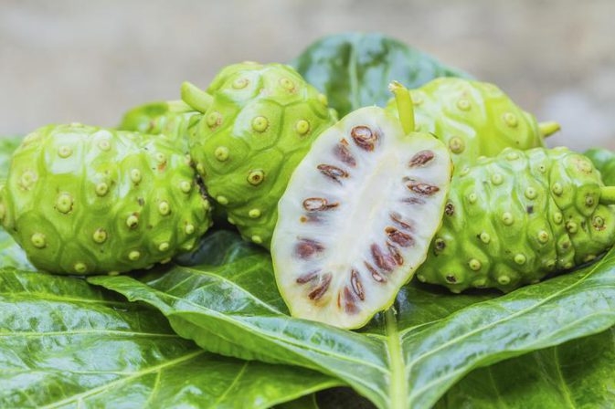

|

|
“ရောဂါပေါင်း (၁၀၁)မျိုးကို ကုသပေးနိုင်တဲ့ ရဲယိုသီးရဲ့ အံ့မခန်းအစွမ်းနဲ့ အသုံးပြုပုံများ”
ရဲယိုသီးကတော့ အသက်ကြီးတဲ့ အဘိုးအဘွားတွေ အမြဲစားသုံးလေ့ရှိတာကို မြင်တွေ့ရမှာပါ။ ရဲယိုပင်က ရှားပါးတဲ့ အပင်မျိုးမဟုတ်ပဲနေရာဒေသတိုင်းမှာ ပေါက်ရောက်နိုင်လို့ အပင်မျိုးဖြစ်တာကြောင့် အိမ်တိုင်းစိုက်ပျိုးထားသင့်တဲ့ နတ်ဆေးပင်ပမာ အစွမ်းထက်တဲ့ အပင်တစ်ပင်ပဲ ဖြစ်ပါတယ်။
ရဲယိုသီးက ဒီတိုင်းစားရင်တောင် အစွမ်းထက်တဲ့ အသီးတစ်မျိုးဖြစ်တဲ့ အပြင် ရောဂါပေါင်း (၁၀၁) မျိုးကိုပျောက်ကင်းစေနိုင်တဲ့ အစွမ်းသတ္တိရှိပါတယ်။ ရဲယိုသီးကို စားသုံးမယ်ဆိုရင် ဗိုက်ထဲမှာ အစာမရှိတဲ့ အချိန်မျိုးမှာ ပိုပြီး စားပေးသင့်ပါတယ်။ ရဲယိုသီးရဲ့ အနံက ထူခြားတာကြောင့် ဒီတိုင်းစားရမှာ တစ်မျိုးဖြစ်နေရင် ပျားရည်၊ ထန်းလျက်တို့နဲ့ ရောပြီး စားသုံးလို့ရပါတယ်။ ရောဂါဝေဒနာခံစားနေရတဲ့ သူတွေဆိုရင်တစ်နေ့ကို သုံးကြိမ်လောက်စားပေးရင် ပိုပြီး သင့်တော်ပါတယ်။ ဒါပေမယ့် ရဲယိုသီးက ရောဂါဖြစ်မှစားရတဲ့ အသီးမျိုးမဟုတ်ပါဘူး။
|